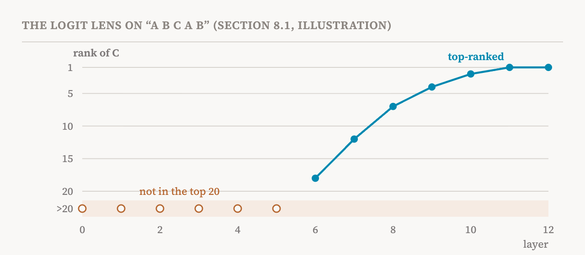

The last two groups broke activations into parts: features in parts 10 to 15, and circuits of interacting features in parts 16 to 20. This group takes a complementary approach. It treats an activation as a whole and asks what information it holds, often by translating it into natural language. The book introduces this in its eighth chapter, and this part covers the chapter's opening and sections 8.1 to 8.3 (pages 66–69): three lenses that decode a middle layer into the model's own vocabulary.
The book stresses what these methods do and do not do. They do not intervene on the activation or decompose it. They provide a direct interface between activations and words, which makes them particularly accessible. That is their strength and, as we will see, the source of their main limit.
The logit lens
Part 4 described the last step of a transformer: the unembedding, which turns the final residual stream into a score for every token in the vocabulary. The logit lens, proposed in 2020 by a researcher writing as nostalgebraist, asks a simple question: what happens if we apply that same unembedding to the residual stream at an earlier layer? The result shows what the model would predict if its computation stopped there. Applied layer by layer, it traces how the prediction forms through the depth of the model, and when the model commits to an answer.
The book reports a general pattern: early layers tend to give diffuse predictions, and later layers progressively narrow them towards the final output, with exceptions. Its example returns to the induction task of part 19. In a twelve-layer model reading A B C A B, the logit lens may show the right answer, C, entering the top 20 candidates at layer 6, getting steadily stronger, and becoming the top-ranked token at the final layer. For harder linguistic patterns, though, early and middle layers may show a flat distribution over many tokens, with the model settling on a prediction only in the last few layers.

The companion notebook runs the logit lens on GPT-2, showing the top tokens at each layer, how the rank of the eventual answer changes, and how quickly each layer's prediction converges on the final one.
Its two limits
The book names two limits of the plain logit lens. The first is a mismatch of formats. Applying the unembedding to a middle layer assumes that the activation there is already in the form the output layer expects. But intermediate representations may be organised very differently. Reading layer 6 through the output layer's eyes can extract relevant information, but it cannot precisely show what the model is computing at layer 6.
The second is more fundamental. The logit lens is correlational, not causal. It projects an activation into the vocabulary without testing what role the decoded tokens play in the computation. Because of the format mismatch, the decoded tokens show at most what can be recovered from the activation, not what the model uses. This is the same distinction between "present" and "used" that runs through the whole series.
The tuned lens
The tuned lens, introduced by Nora Belrose and colleagues, addresses the first limit. For each layer, it learns a small affine transformation, a matrix and an offset, that maps that layer's activations into the format of the output layer before the unembedding is applied. The transformations are trained so that each layer's decoded prediction matches the model's final prediction as closely as possible. The result extracts information from each layer more effectively than the plain logit lens.
But the book points out that the tuned lens inherits the logit lens's deeper limits, and adds one of its own. It is still correlational. It is still designed to answer what the model is likely to predict, not what the model is computing internally. And because it is trained to match the final output, its corrections can hide intermediate steps and produce predictions that look like the final answer too early. A 2026 study found that it skips intermediate computation even more aggressively than the logit lens. Its notebook compares the two lenses on GPT-2 Large.
The Jacobian lens
The Jacobian lens, or J-lens, from a 2026 Anthropic study, takes a different approach. Instead of asking what a middle layer would predict, it asks how that layer's activation will influence what the model eventually says.
The tool is the Jacobian, met in part 17: a table of how a small change in one place changes values in another. A change to the residual stream at some layer and position spreads forward to the final layer at that position and every later one. The J-lens averages the Jacobian of that spread over many prompts and positions, giving one lens matrix per layer. To decode an activation, it first multiplies it by that matrix, as if pushing it forward to the end of the model, then normalises it and applies the unembedding.
![Three rows, one per lens. Logit lens: apply the model's unembedding directly to a middle layer's activation; it asks what the model would predict if it stopped here. Tuned lens: first apply a small learned correction for that layer, then unembed; it asks what the model will predict. Jacobian lens: first apply the average Jacobian, which says how the activation will influence the final layer, then unembed; it asks what the activation is disposed to make the model say. A band at the bottom marks the J-space, the middle stretch of depth where the Jacobian lens is most informative, about 38–92% in Claude Sonnet 4.5.](../../images/inside-21-lenses-en.png)
Two things follow. First, the J-lens aims to answer what the model is internally computing, not merely what it is going to predict next. The study found it useful for tasks that need several reasoning steps, latent planning, or other extended computation. Second, it gives a tool for intervention. The study defined J-lens vectors for each token at each layer, and the alignment of an activation with a J-lens vector measures how strongly that activation will push the model towards saying that token. These vectors can then serve as steering vectors, pushing the model towards or away from a concept. The logit lens and the tuned lens, by contrast, are decoding tools with little use for intervention.
Its limits
The book lists two limits of the J-lens too. It still works at the level of single tokens, while many concepts span several. If a word like "photoperiodism" is split into several subword tokens and only "photo" shows up in the lens, it is impossible to tell whether the concept is photoperiodism or some other word beginning with photo.
And it works well only in a certain range of layers, which the study called J-space. In Claude Sonnet 4.5, the decoded concepts were most informative at roughly 38 to 92% of the model's depth. Before that, they are noisy and hard to read; after it, they collapse towards the model's output and say little. Some recent studies have tried to address these limits. The companion notebook applies a pre-fitted J-lens to a Qwen model and compares it with the logit lens.
This site has read the J-lens study closely twice, in "Global Workspace Theory in AI", on what the J-space might mean, and in "What a Cleaner Lens Shows", on a later fix to the lens.
Three lenses, three questions
| Lens | What it does to a middle-layer activation | The question it answers | Main limit |
|---|---|---|---|
| Logit lens | Applies the unembedding directly | What would the model predict if it stopped here? | Assumes middle layers use the output's format; correlational |
| Tuned lens | Applies a learned per-layer correction, then the unembedding | What will the model predict? | Correlational; can hide intermediate steps |
| Jacobian lens | Pushes the activation forward with the average Jacobian, then unembeds | What is this activation disposed to make the model say? | Token-level only; informative only in the middle layers |
| Term | Meaning |
|---|---|
| Intermediate representation | The activation at a middle layer of the model |
| Lens | A method that translates an intermediate representation into the model's output vocabulary |
| Logit lens | Applying the model's unembedding directly to a middle layer's residual stream |
| Logits | The raw scores a model gives every token before they are turned into probabilities |
| Representational mismatch | Middle layers organising information differently from the output layer |
| Tuned lens | A logit lens with a learned correction for each layer |
| Affine transformation | A matrix multiplication plus an offset |
| Jacobian lens (J-lens) | A lens that decodes how an activation will influence the model's final output |
| J-lens vector | A direction whose alignment with an activation says how strongly it pushes the model towards a token |
| J-space | The range of middle layers where the J-lens is most informative |
Next, part 22 asks the model itself to explain its activations, with Patchscopes, LatentQA and activation oracles.